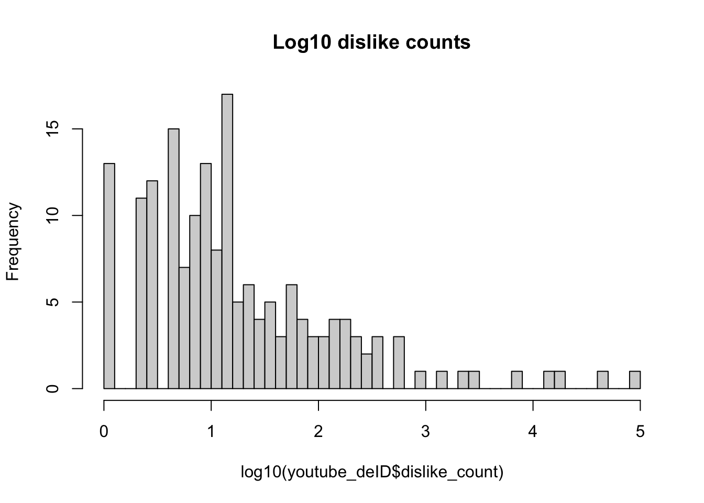

Consider a 1-dimensional random walk with the following rules:
Start at 0. At each step, move +1 or -1 with 50/50 probability. If +1 is chosen, 5% of the time move +10 instead. If -1 is chosen, 20% of the time move -3 instead. Repeat steps 2-4 times. (Note that if the +10 is chosen, it’s not +1 then +10, it is just +10.)
Write a function to determine the end position of this random walk.
The input and output should be:
Input: The number of steps
Output: The final position of the walk
random_walk(10) [1] 4
random_walk(10) [1] -11
We’re going to implement this in different ways and compare them.
a. Implement the random walk in these three versions:
Version 1: using a loop.
#' Version 1 of random walk#'#' Takes a random step number count based on input starting at 0, and returns a random output#' #' @params n = number of steps in the walk#' @returns final = final position of the walk#' #' @examples#' ver1(10) = 4#' ver1(10) = -11#' ver1 <-function(n){# start at 0 walk <-0 steps <-1# At each step from 1 to n input for (steps in1:n){# move +1 or -1 with 50/50 probability move <-sample(c(1,-1), size =1, prob =c(0.5, 0.5))# take a step in that direction# print(move) walk <- walk + move# +1 is chosen, 5% of the time move +10 instead (9 because you already stepped 1)if (move >0) { walk <- walk +sample(c(0, 9), 1, prob =c(0.95, 0.05))# print(walk) } else {# If -1 is chosen, 20% of the time move -3 instead. (-2 because you already stepped -1) walk <- walk +sample(c(0, -2), 1, prob =c(0.80, 0.20))# print(walk) } } final <- walkreturn(final)}ver1(10)
[1] 2
ver1(10)
[1] 9
Version 2: using built-in R vectorized functions. (Using no loops.) (Hint: Does the order of steps matter?)
#' Version 2 of random walk#'#' Takes a random step number count based on input starting at 0, and returns a random output#' using vectorized functions#' #' @params n = number of steps in the walk#' @returns final = final position of the walk#' #' @examples#' ver1(10) = 4#' ver1(10) = -11#' ver2 <-function(n){# set up moves +1 or -1 steps <-sample(c(1, -1), n, replace =TRUE)# print(steps)# +10 jump 5% of the time when base is +1 steps[steps ==1] <-1+rbinom(sum(steps ==1), 1, 0.05) *9# print(steps)# -3 jump 20% of the time steps[steps ==-1] <--1+rbinom(sum(steps ==-1), 1, 0.20) *-2# print(steps)# then sum to find final spot final <-sum(steps)return(final)}ver2(10)
[1] -14
ver2(10)
[1] -6
Version 3: Implement the random walk using one of the “apply” functions.
#' Version 3 of random walk#'#' Takes a random step number count based on input starting at 0, and returns a random output#' using apply functions#' #' @params n = number of steps in the walk#' @returns final = final position of the walk#' #' @examples#' ver1(10) = 4#' ver1(10) = -11#' ver3 <-function(n){# set up moves +1 or -1 steps <-sample(c(1, -1), n, replace =TRUE)# using apply function, +10 jump 5% of the time when base is +1# and -3 jump 20% of the time when base is -1 walk <-vapply(steps, function(x){if(x ==1){ x <-sample(c(1, 10), 1, prob =c(0.95, 0.05)) } else { x <-sample(c(-1, -3), 1, prob =c(0.80, 0.20)) } }, numeric(1))# print(walk)return(sum(walk))}ver3(10)
[1] -4
ver3(10)
[1] -4
Demonstrate that all versions work by running the following: random_walk1(10) random_walk2(10) random_walk3(10) random_walk1(1000) random_walk2(1000) random_walk3(1000)
b. Demonstrate that the three versions can give the same result. Show this for both n=10 and n=1000. (You will need to add a way to control the randomization.)
# version #1 walk for same resultrandom_walk1_same <-function(n) {# set up with +1 or -1 steps <-sample(c(1, -1), n, replace =TRUE)# check to see if start is the same# print(steps)# At each step from 0 to n input for (i in1:n){# +1 is chosen, 5% of the time move +10 if (steps[i] >0) { steps[i] <-ifelse(runif(1) <0.05, 10, 1) } else {# If -1 is chosen, 20% of the time move -3 steps[i] <-ifelse(runif(1) <0.20, -3, -1) } }# print(steps)# sum final <-sum(steps)return(final)}# version #2 walk for same resultrandom_walk2_same <-function(n) {# set up with +1 or -1 steps <-sample(c(1, -1), n, replace =TRUE)# check to see if start is the same# print(steps)# uniform random draws u <-runif(n)# step 1: replace the +1’s steps[steps ==1] <-ifelse(u[steps ==1] <0.05, 10, 1)# step 2: replace the -1’s steps[steps ==-1] <-ifelse(u[steps ==-1] <0.20, -3, -1)# print(steps)# then sum to find final spot final <-sum(steps)return(final)}# version #3 walk for same resultrandom_walk3_same <-function(n) {# set up with +1 or -1 steps <-sample(c(1, -1), n, replace =TRUE)# check to see if start is the same# print(steps)# using apply function, +10 jump 5% of the time when base is +1# and -3 jump 20% of the time when base is -1 walk <-vapply(steps, function(x){if(x ==1){ifelse(runif(1) <0.05, 10, 1) } else {ifelse(runif(1) <0.20, -3, -1) } }, numeric(1))# print(walk)return(sum(walk))}set.seed(67)random_walk1_same(10)
[1] 2
set.seed(67)random_walk2_same(10)
[1] 2
set.seed(67)random_walk3_same(10)
[1] 2
set.seed(67)random_walk1_same(1000)
[1] 28
set.seed(67)random_walk2_same(1000)
[1] 28
set.seed(67)random_walk3_same(1000)
[1] 28
c. Use the microbenchmark package to clearly demonstrate the speed of the implementations. Compare performance with a low input (1,000) and a large input (100,000). Discuss the results.
library(microbenchmark)# Benchmark with n = 1,000set.seed(67)microbenchmark(walk1 =random_walk1_same(1000),walk2 =random_walk2_same(1000),walk3 =random_walk3_same(1000))
Warning in microbenchmark(walk1 = random_walk1_same(1000), walk2 =
random_walk2_same(1000), : less accurate nanosecond times to avoid potential
integer overflows
Unit: microseconds
expr min lq mean median uq max neval cld
walk1 851.119 870.2455 939.52320 899.9910 917.8055 3903.036 100 a
walk2 42.681 45.4485 49.34883 47.1295 52.5620 104.755 100 b
walk3 1033.200 1085.1265 1144.49532 1109.3165 1124.5685 1979.972 100 c
# Benchmark with n = 100,000set.seed(67)microbenchmark(walk1 =random_walk1_same(100000),walk2 =random_walk2_same(100000),walk3 =random_walk3_same(100000))
Unit: milliseconds
expr min lq mean median uq max neval
walk1 89.823456 91.121147 92.896674 92.261562 93.350481 117.133105 100
walk2 3.859494 3.992293 4.247253 4.097848 4.213755 7.094025 100
walk3 109.645152 111.034068 115.304869 112.629399 114.825297 159.695738 100
cld
a
b
c
The results show that even in small implementation, vectorization was significantly faster. There is not much of a difference between a loop and apply, however loop is faster actually. This shows up even stronger when you run it for 10,000 times. Its extremely much faster to vectorize. My apply is longer because it calls two functions instead of 1 for the loop.
d. What is the probability that the random walk ends at 0 if the number of steps is 10? 100? 1000? Defend your answers with evidence based upon a Monte Carlo simulation.
#' Monte Carlo Simulation #'#' #' #' @params n = number of steps#' @params trials = number of trials #' @params seed = seed for randomness#' @returns results with all the information of the runs#' #' @examples#' ver1(10) = 4#' ver1(10) = -11#' mc_sim_prob <-function(n, trials, seed){set.seed(seed)# set up vectors for storage sums <-vector("list", 3) hits <-numeric(3)# run each random walk over # of trials sums[[1]] <-replicate(trials, random_walk1_same(n)) # N draws random walk 1(n) sums[[2]] <-replicate(trials, random_walk2_same(n)) # N draws random walk 2(n) sums[[3]] <-replicate(trials, random_walk3_same(n)) # N draws random walk 3(n)# store how many times it ends at 0 hits[1] <-sum(sums[[1]] ==0) hits[2] <-sum(sums[[2]] ==0) hits[3] <-sum(sums[[3]] ==0)# results in a data frame results <-data.frame(n = n,trials = trials,walk1_hits = hits[1],walk1_p_hat = hits[1] / trials,walk1_ci_low =binom.test(hits[1], trials)$conf.int[1],walk1_ci_up =binom.test(hits[1], trials)$conf.int[2],walk2_hits = hits[2],walk2_p_hat = hits[2] / trials,walk2_ci_low =binom.test(hits[2], trials)$conf.int[1],walk2_ci_up =binom.test(hits[2], trials)$conf.int[2],walk3_hits = hits[3],walk3_p_hat = hits[3] / trials,walk3_ci_low =binom.test(hits[3], trials)$conf.int[1],walk3_ci_up =binom.test(hits[3], trials)$conf.int[2] )return(results)}# random walk ends at 0 if the number of steps is 10? 100? 1000?mc1 =mc_sim_prob(10, 10000, 67)mc2 =mc_sim_prob(100, 10000, 67)mc3 =mc_sim_prob(1000, 10000, 67)cat("Number of steps:", mc1$n, "\n","Number of MC sims:", mc1$trials, "\n","Probability of 0 steps for Walk 1:", mc1$walk1_p_hat*100, "% Lower Bound:", mc1$walk1_ci_low, " Upper Bound:", mc1$walk1_ci_up, "\n","Probability of 0 steps for Walk 2:", mc1$walk2_p_hat*100, "% Lower Bound:", mc1$walk2_ci_low, " Upper Bound:", mc1$walk2_ci_up, "\n","Probability of 0 steps for Walk 3:", mc1$walk3_p_hat*100, "% Lower Bound:", mc1$walk3_ci_low, " Upper Bound:", mc1$walk3_ci_up, "\n", "\n")
Number of steps: 10
Number of MC sims: 10000
Probability of 0 steps for Walk 1: 13.51 % Lower Bound: 0.1284572 Upper Bound: 0.1419561
Probability of 0 steps for Walk 2: 12.8 % Lower Bound: 0.121511 Upper Bound: 0.1347065
Probability of 0 steps for Walk 3: 12.85 % Lower Bound: 0.1219999 Upper Bound: 0.1352172
cat("Number of steps:", mc2$n, "\n","Number of MC sims:", mc2$trials, "\n","Probability of 0 steps for Walk 1:", mc2$walk1_p_hat*100, "% Lower Bound:", mc2$walk1_ci_low, " Upper Bound:", mc2$walk1_ci_up, "\n","Probability of 0 steps for Walk 2:", mc2$walk2_p_hat*100, "% Lower Bound:", mc2$walk2_ci_low, " Upper Bound:", mc2$walk2_ci_up, "\n","Probability of 0 steps for Walk 3:", mc2$walk3_p_hat*100, "% Lower Bound:", mc2$walk3_ci_low, " Upper Bound:", mc2$walk3_ci_up, "\n", "\n")
Number of steps: 100
Number of MC sims: 10000
Probability of 0 steps for Walk 1: 1.94 % Lower Bound: 0.01678737 Upper Bound: 0.02229755
Probability of 0 steps for Walk 2: 1.89 % Lower Bound: 0.01632191 Upper Bound: 0.02176339
Probability of 0 steps for Walk 3: 2.14 % Lower Bound: 0.01865372 Upper Bound: 0.0244297
cat("Number of steps:", mc3$n, "\n","Number of MC sims:", mc3$trials, "\n","Probability of 0 steps for Walk 1:", mc3$walk1_p_hat*100, "% Lower Bound:", mc3$walk1_ci_low, " Upper Bound:", mc3$walk1_ci_up, "\n","Probability of 0 steps for Walk 2:", mc3$walk2_p_hat*100, "% Lower Bound:", mc3$walk2_ci_low, " Upper Bound:", mc3$walk2_ci_up, "\n","Probability of 0 steps for Walk 3:", mc3$walk3_p_hat*100, "% Lower Bound:", mc3$walk3_ci_low, " Upper Bound:", mc3$walk3_ci_up, "\n", "\n")
Number of steps: 1000
Number of MC sims: 10000
Probability of 0 steps for Walk 1: 0.49 % Lower Bound: 0.00362718 Upper Bound: 0.006472945
Probability of 0 steps for Walk 2: 0.56 % Lower Bound: 0.004232871 Upper Bound: 0.007265981
Probability of 0 steps for Walk 3: 0.63 % Lower Bound: 0.004844389 Upper Bound: 0.008053335
Problem 2 - Mean of Mixture of Distributions
The number of cars passing an intersection is a classic example of a Poisson distribution. At a particular intersection, Poisson is an appropriate distribution most of the time, but during rush hours (hours of 8am and 5pm) the distribution is really normally distributed with a much higher mean.
Using a Monte Carlo simulation, estimate the average number of cars that pass an intersection under the following assumptions:
From midnight until 7 AM, the distribution of cars per hour is Poisson with mean 1.
From 9am to 4pm, the distribution of cars per hour is Poisson with mean 8.
From 6pm to 11pm, the distribution of cars per hour is Poisson with mean 12.
During rush hours (8am and 5pm), the distribution of cars per hour is Normal with mean 60 and variance 12 Accomplish this without using any loops.
(Hint: This can be done with extremely minimal code.)
# trailsn =10000# From midnight until 7:59 AM, the distribution of cars per hour is Poisson with mean 1.time1 <-mean(rpois(n, 1))# From 9am to 4pm, the distribution of cars per hour is Poisson with mean 8. time2 <-mean(rpois(n, 8))# From 6pm to 11:59pm, the distribution of cars per hour is Poisson with mean 12. time3 <-mean(rpois(n, 12))# During rush hours (8am and 5pm), the distribution of cars per hour is # Normal with mean 60 and variance 12 time4 <-mean(rnorm(n, mean =60, sd =12))#sum over all hours the average for a daycars <- time1*8+ time2*7+ time3*6+ time4*2print(cars)
[1] 255.5458
Problem 3 - Linear Regression
Use the following code to download the YouTube Superbowl commercials data:
Information about this data can be found at https://github.com/rfordatascience/tidytuesday/tree/main/data/2021/2021-03-02. The research question for this project is to decide which of several attributes, if any, is associated with increased YouTube engagement metrics.
a. Often in data analysis, we need to de-identify it. This is more important for studies of people, but let’s carry it out here. Remove any column that might uniquely identify a commercial. This includes but isn’t limited to things like brand, any URLs, the YouTube channel, or when it was published. Report the dimensions of the data after removing these columns.
b. For each of the following variables, examine their distribution.
Determine whether i) The variable could be used as is as the outcome in a linear regression model, ii) The variable can use a transformation prior to being used as the outcome in a linear regression model, or iii) The variable would not be appropriate to use as the outcome in a linear regression model.
For each variable, report which category it falls in. If it requires a transformation, carry such a transformation out and use that transformation going forward.
View counts
Like counts
Dislike counts
Favorite counts
Comment counts (Hint: At least the majority of these variables are appropriate to use.)
# examine distribution of view counthist(youtube_deID$view_count)
# view count has some very large numbers, meaning that if I do a log transformation I can see it more clearly and show that it has a relatively normal distribution. It might have some outliers but nothing crazy so I'm going to log transform it for the datasetyoutube_deID$view_count <-log10(youtube_deID$view_count)# remove view counts that are NAyoutube_deID <-subset(youtube_deID, !is.na(view_count))#examine distribution of like counthist(youtube_deID$like_count)
# like count has a lot of zeros, so it might be helpful to separate those out into their own columnyoutube_deID$zero_likes <- youtube_deID$like_count ==0youtube_deID$like_count[youtube_deID$like_count ==0] <-NA# try to also do it with 1 or 0youtube_deID$zero_likes <- youtube_deID$like_count <3youtube_deID$like_count[youtube_deID$like_count <3] <-NA# this looks reasonably normal with these edits, so I would just log transform ityoutube_deID$like_count <-log10(youtube_deID$like_count)hist(youtube_deID$like_count)
# examine distribution of dislike counthist(youtube_deID$dislike_count)
# lots of zeros again, and a few 1s so remove them youtube_deID$zero_dislikes <- youtube_deID$dislike_count <1youtube_deID$dislike_count[youtube_deID$like_count <1] <-NA# remove counts that are NAyoutube_deID <-subset(youtube_deID, !is.na(dislike_count))hist(log10(youtube_deID$dislike_count), breaks =50, main="Log10 dislike counts")

# this looks good now to use for a linear regression# examine distribution of fav counthist(youtube_deID$favorite_count)
# favorite is almost all zero, meaning that we should not use it at all for the linear regression# examine distribution of comment counthist(youtube_deID$comment_count)
# lots of zeros again, and a few 1s so remove them youtube_deID$zero_comments <- youtube_deID$comment_count <1youtube_deID$comment_count[youtube_deID$comment_count <1] <-NA# remove counts that are NAyoutube_deID <-subset(youtube_deID, !is.na(comment_count))hist(log10(youtube_deID$comment_count), breaks =50, main="Log10 comment counts")
# this looks good now to use for a linear regression
c. For each variable in part b. that are appropriate, fit a linear regression model predicting them based upon each of the seven binary flags for characteristics of the ads, such as whether it is funny. Control for year as a continuous covariate.
Discuss the results. Identify the direction of any statistically significant results.
summary(youtube_deID)
year funny show_product_quickly patriotic
Min. :2000 Mode :logical Mode :logical Mode :logical
1st Qu.:2006 FALSE:49 FALSE:48 FALSE:140
Median :2009 TRUE :118 TRUE :119 TRUE :27
Mean :2010
3rd Qu.:2015
Max. :2020
celebrity danger animals use_sex
Mode :logical Mode :logical Mode :logical Mode :logical
FALSE:116 FALSE:109 FALSE:106 FALSE:126
TRUE :51 TRUE :58 TRUE :61 TRUE :41
id kind etag view_count
Length:167 Length:167 Length:167 Min. :2.479
Class :character Class :character Class :character 1st Qu.:4.472
Mode :character Mode :character Mode :character Median :4.931
Mean :4.985
3rd Qu.:5.426
Max. :8.246
like_count dislike_count favorite_count comment_count
Min. :1.000 Min. : 0 Min. :0 Min. : 1.0
1st Qu.:1.903 1st Qu.: 5 1st Qu.:0 1st Qu.: 7.5
Median :2.368 Median : 12 Median :0 Median : 25.0
Mean :2.478 Mean : 1120 Mean :0 Mean : 250.7
3rd Qu.:2.881 3rd Qu.: 55 3rd Qu.:0 3rd Qu.: 82.5
Max. :5.440 Max. :92990 Max. :0 Max. :9190.0
NA's :1
published_at category_id zero_likes zero_dislikes
Length:167 Min. : 1.00 Mode :logical Mode :logical
Class :character 1st Qu.:17.00 FALSE:166 FALSE:159
Mode :character Median :23.00 TRUE :1 TRUE :8
Mean :19.04
3rd Qu.:24.00
Max. :27.00
zero_comments
Mode :logical
FALSE:167
# /Weak fit = low R^2, patriotic and year sig. positive correlation.
d. Consider only the outcome of view counts. Calculate manually (without using lm) by first creating a proper design matrix, then using matrix algebra to estimate. Confirm that you get the same result as lm did in part c.
# Use the same filtered modeling data# youtube_deID# y is view count with log transformationy <- youtube_deID$view_count# Model matrix including interceptX <-model.matrix(~ funny + show_product_quickly + patriotic + celebrity + danger + animals + use_sex + year, data = youtube_deID)# Closed-form OLS solutionb_hat <-solve(t(X) %*% X, t(X) %*% y)# Compare to part cprint(coef(m_view))